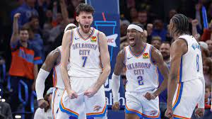

Mom Made Pizza Rolls!
Thunder Roster
| Name | Position | College |
|---|---|---|
| Alex Caruso | Guard | Texas A&M |
| Luguentz Dort | Guard | Arizona State |
| Shai Gilgeous-Alexander | Guard | Kentucky |
| Chet Holmgren | Center | Gonzaga |
| Jalen Williams | Forward | Santa Clara |
Quotes from Coach Daigneault
As a foundation, the way I see the game offensively is you’ve got to play with great pace, keep the floor spaced and let the ball breathe…and let players play to their strengths.
…development is not linear and the reason we say growth through experiences is you have to grow through your struggles. And sometimes your struggles are blessings in disguise
I think people that are great at what they do and that are great craftsmen, they’re good because of what’s invisible. They’re good because of what’s invisible. They’re good because of what’s boring.